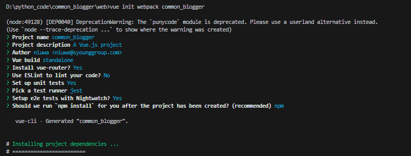
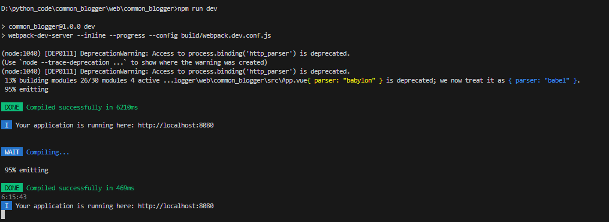

VUE+Element 搭建前端项目
准备工作
1 | 1. 安装Nodejs |
搭建步骤
安装cli-init
1
npm i -g @vue/cli-init
初始化项目
1
vue init webpack <项目>

运行项目
1
2cd <项目>
npm run dev
安装 cnpm
1
npm install -g cnpm --registry=https://registry.npmmirror.com

安装 element-ui 框架
1
2
3cnpm i element-ui -S
npm install element-ui在项目中使用 element-ui
在main.js中引入element组件
1
2
3
4
5
6
7
8
9
10
11
12
13
14
15
16
17
18
19// The Vue build version to load with the `import` command
// (runtime-only or standalone) has been set in webpack.base.conf with an alias.
import Vue from 'vue'
import App from './App'
import router from './router'
/*引入element组件*/
import ElementUI from 'element-ui';
import 'element-ui/lib/theme-chalk/index.css';
Vue.use(ElementUI);
Vue.config.productionTip = false
/* eslint-disable no-new */
new Vue({
el: '#app',
router,
components: { App },
template: '<App/>'
})在 HelloWorld.vue 中使用组件
1
2
3
4
5
6
7
8
9
10
11
12
13
14
15
16
17
18
19
20
21
22
23
24
25
26
27
28
29
30
31
32
33
34
35
36
37
38
39
40
41
42
43<template>
<div class="hello">
<h1>{{ msg }}</h1>
<el-row>
<el-button>默认按钮</el-button>
<el-button type="primary">主要按钮</el-button>
<el-button type="success">成功按钮</el-button>
<el-button type="info">信息按钮</el-button>
<el-button type="warning">警告按钮</el-button>
<el-button type="danger">危险按钮</el-button>
</el-row>
</div>
</template>
<script>
export default {
name: "HelloWorld",
data() {
return {
msg: "使用element-ui测试",
};
},
};
</script>
<!-- Add "scoped" attribute to limit CSS to this component only -->
<style scoped>
h1,
h2 {
font-weight: normal;
}
ul {
list-style-type: none;
padding: 0;
}
li {
display: inline-block;
margin: 0 10px;
}
a {
color: #42b983;
}
</style>
- 最终效果

本博客所有文章除特别声明外，均采用 CC BY-NC-SA 4.0 许可协议。转载请注明来自 牛蛙JUN！